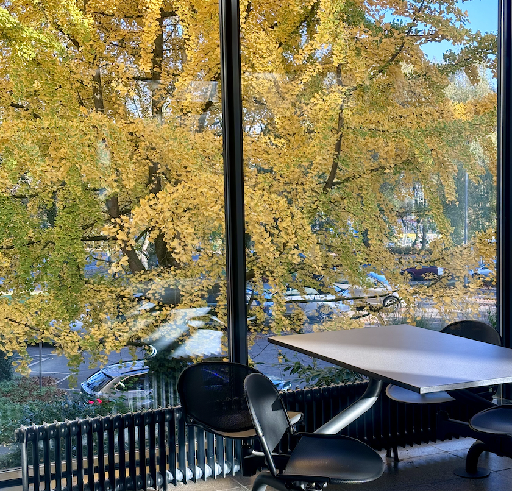
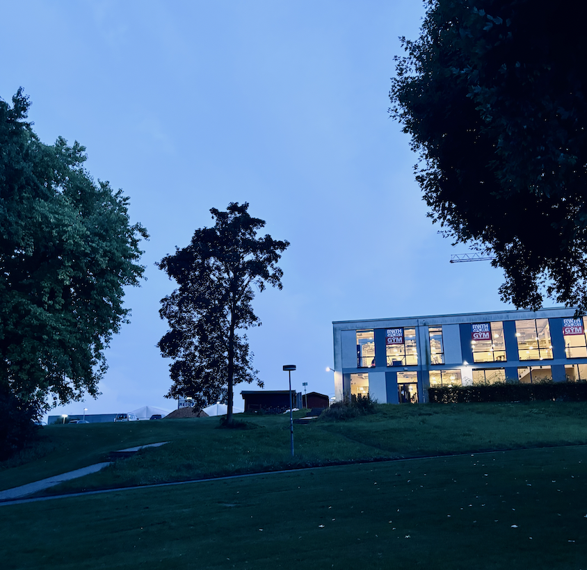

A Chapter Closes
It feels like the closing of a chapter, or perhaps another life lived in a parallel universe.
Time has felt strangely non-linear these past two years. I sometimes wonder whether there exists a function powerful enough to model human feelings — a system that could take emotions and treasured moments as input and return a summary of how we’ve changed, and who we’ve managed to become. Maybe such a function already exists behind those high-dimensional vector spaces that I still cannot fully understand.

Memories and feelings don’t sit still long enough to be embedded, however. They blur at the edges, drift, and move in ways no vector can fully capture.
When I was younger, life felt like a progress bar I could monitor, or a piece of code I could debug into certainty. I even believed that if one was serious enough, life could be “coded,” that clarity and structure would naturally follow. But the truth seems to be more mysterious, and less obedient to logic. Perhaps when I get older, I'll be able to find some kind of simplicity.

Looking back now, I sometimes find myself overwhelmed by feelings, many of which I still lack words for. Maybe with age I’ll learn to be precise and concise. Or maybe human feelings will always exceed the language available to express them.
I still remember two years ago, before leaving Delft for Aachen. I felt uncertain, nervous, excited — just the usual ingredients of a big (well, what seemed “big” at the time) transition, though my inner world tends to amplify them into something more theatrical than necessary.
Now, two years later, I’ve learned new technologies, new methods, new ways of thinking at the institute. Research comes with challenges, not every idea becomes a prototype, and some concepts require deeper understanding than I initially had. But every challenge taught me something valuable. I am grateful to my colleagues and supervisors for their patience, insight, and generosity. Outside work, I learned fragments of German culture as well. Living in different countries feels like running multiple operating systems simultaneously in the mind, occasionally confusing, but ultimately beautiful.
I write this partly for self-reflection, and partly in the hope that it may resonate with someone who has similar experiences or who might find something helpful in it. Years later, when I look back, I hope I’ll remember the quiet texture of these days, the people I met, and the small, luminous moments in between. Words are perhaps a more authentic way for me to connect with the world.
“Magic is in the experience.”
— GPT
It’s beautiful. I might as well use it as my ending note. :)
Goodbye, and all my best, to all the encounters.